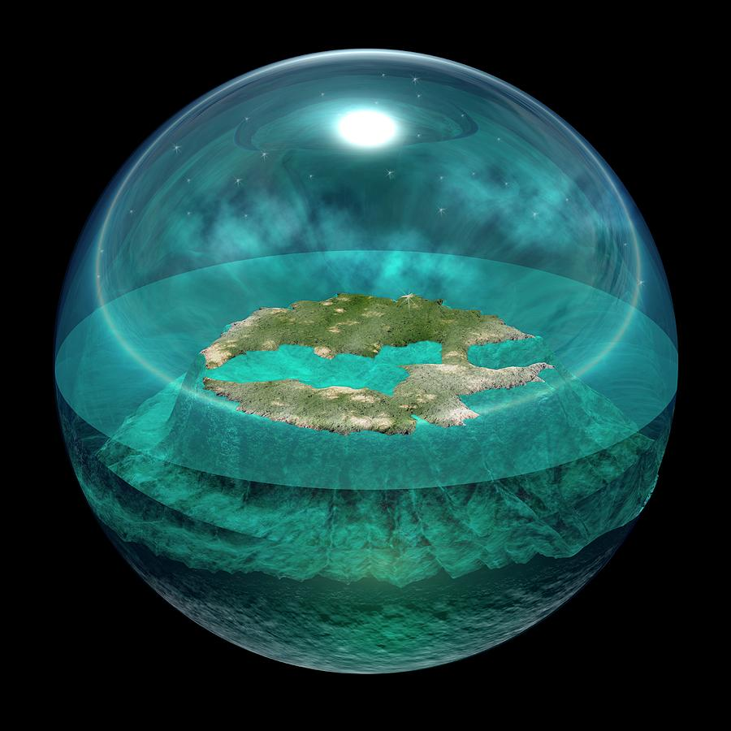
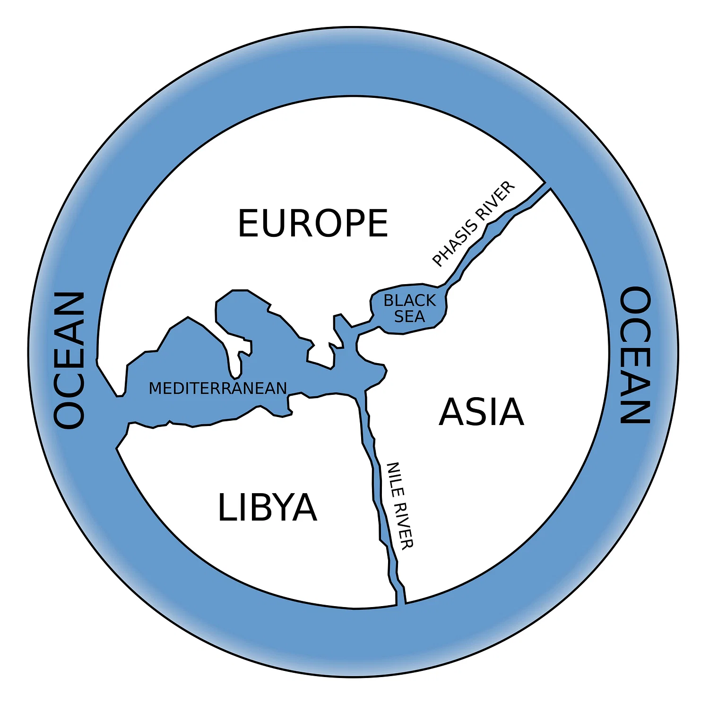
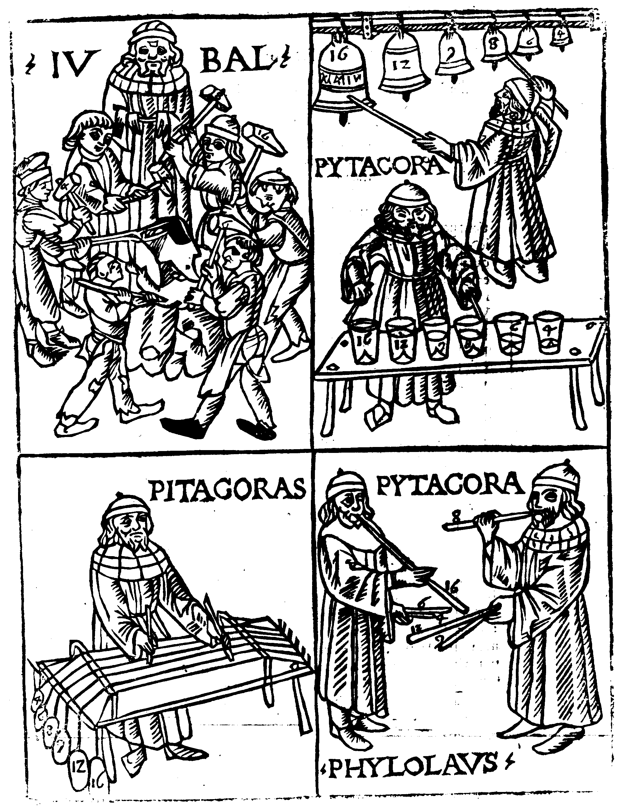
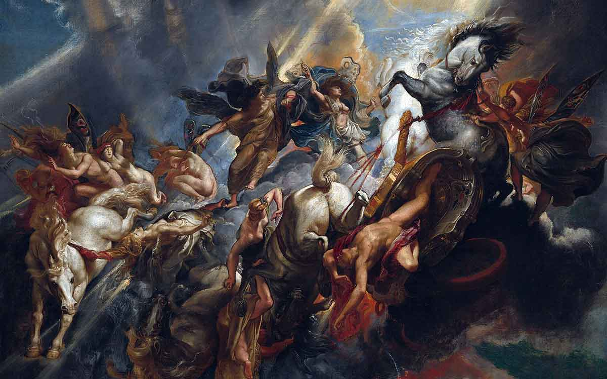

On a particularly cold winter evening, I realized I did not know myself. And so, I embarked on a journey, attempting to answer questions most never think to ask. Everything has a beginning. Or does it? Such cosmological questions drove the first philosophers — the backdrop against which the brilliant color of Socratic thought would shine.
Thales determines that the world is of water — and with that single claim, myth gives way to argument.
CosmologyFirst PhilosopherWater as Arche
⏱ 3 min read
If everything has a beginning, everything has to come from something. It is this question that Thales of Miletus sought to answer. He is unanimously regarded as the first real philosopher, as we imagine them in the western world. To answer the big question, Thales first asks: if a small rock falls, and a large boulder falls too, then why does the Earth, the largest boulder of all, not plummet down eternally? Furthermore, how was it even created? It is here that Thales attempts to confront existence. Although he was a deeply intelligent mathematician and orator, no works of his survive today. In fact, almost all we know of him is as a result of Aristotle's works and historians like Diogenes Laertius. We are left with but four snippets:
Fragment 1
The World derives from water.
Fragment 2
The World rests on water.
Fragment 3
The world is full of gods.
Fragment 4
Soul produces motion.

Thales' earth floating on water.
The world is of water, and it comes from the water it rests upon. Thales' belief in the universal property of water is justified through the fact that life cannot exist without it. The earth, he holds, does not plummet because it is buoyant, floating upon water.
Like us, Thales is gripped by the power of nature, and the fragility of our existence. Thus he concludes that if everything is of water, its divine nature cannot be denied. It makes sense that Thales claims the world is full of gods, for it is composed of the divine. The last fragment appears to reference the Milesian idea that motion is proof of life, and thus the soul is the source of motion. Thales is foundational in the study of cosmology, and his teachings lay the groundwork for the generations of philosophers who follow. His attempts to define reality empirically echo through the natural philosophers who come after him for centuries.
To appreciate the importance of Thales, one must understand what he represents beyond his fragments. What does it mean to be the first philosopher? It means to replace an earth held up by Atlas, a sea governed by Poseidon, a sky ruled by Zeus, with argument and logic. Thales presents a real theory; a tangible idea. His neighbors mock philosophy's supposed impracticality, questioning why reality needs deciphering. He silences critique by predicting a bumper olive harvest, cornering the market and securing his fortune. He reportedly predicts a solar eclipse in 585 BCE, demonstrating that the cosmos operates by principles that can be known and anticipated.
Thales proves that wisdom is not abstract removal from the world, but in fact the deepest possible engagement with it. For the rest of his life, his gaze remains fixed outward: on water and stars and the earth beneath his feet. The question he never reaches is the one that will come to define everything that follows: not what the world is made of, but how we ought to live within it.
A finite existence is constructed from the infinite.
ApeironEarly EvolutionCartography
⏱ 2 min read
Though Thales's theory apparently answers the question of existence, it does not sit well with Anaximander of Miletus. Like his predecessor, he questions the origin and composition of the universe. However, he is unsatisfied with the origins of the universe being something as specific and seemingly arbitrary as water. Thus, he posits a much broader, yet far more sophisticated idea: Apeiron. The universe must be constituted of something limitless, infinite, undefined. This is Apeiron: the infinite. He chooses to answer the question differently, arguing that everything doesn't have a beginning; origin is undefined by definition.

Anaximander's map of the world.
Anaximander is also a gifted polymath, credited with drawing one of the first world maps. Anaximander furthers the development of early cosmology, mathematics, geography, and philosophy. He proposes an early theory of evolution, noting that man would not have survived as he is today, without having come from a different form of life. Human infants are helpless, and would naturally be vulnerable to predators. Thus, it must be the case that man came from something else, positing evolution.
Through his work, Anaximander widens the gap between the cosmos and humanity, enlarging the universe and shrinking its inhabitants. He argues that nothing has a defined origin, not the universe, nor us. We are not the eternal beings we may have hoped to be, but mere descendants from creatures we scarcely resemble. His work is crucial in defining the first philosophical confrontation with human fragility. The question is no longer simply what the world is made of. It is beginning to become: what are we?
As breath holds the body together, Aer holds the universe together.
AerCondensation & Rarefaction
⏱ 2 min read
The third of Miletus' great thinkers, Anaximenes is a student of Anaximander and offers his own answer to the Milesian question. He combines the ideas of his predecessors to posit that air is the fundamental principle of the universe. In its standard form, air composes the atmosphere as we experience it. However, he also argues that when increasingly condensed, "Aer" condenses into mist, then into water, and ultimately into earth and stones. If it is rarefied, it becomes fire. This theory is important in Anaximenes' real impact: the idea that known natural processes such as condensation and rarefaction could explain the transformations of matter.
He elevates the life-giving substance to the very composition of the universe, providing a more comprehensive explanation for the origin of all things, to the creation of human existence. Anaximenes argues that as breath holds the human body together, Aer holds the universe together. Much like the Thalesian fragment arguing that soul produces motion, Anaximenes declares that Aer, the giver of life, or the soul, is responsible for all universal processes, thus producing motion. Anaximenes challenges traditional beliefs about the unique nature of humanity: Are we really above our existence, or are we merely reality observing itself?
Does everything have a beginning? The Milesians answered — and left new questions in their wake.
Synthesis
⏱ 2 min read
Miletus stands as the birthplace of philosophy, inspiring and defining Western intellectualism. Her first thinker, Thales, lifts Greece out of its dogmatic slumber, defining a reality governed by logic, not divine mandate. He argues that everything does have a beginning, and that beginning is the substance of water, whose divinity produces motion.
He is succeeded by Anaximander, who pushes reality and humanity apart, stating that origin is undefined and unbounded. His Apeiron, or the infinite, is the source of reality; although it is abstract, it deepens the inquiry into existence's origin. His student, Anaximenes, ties both ideas together. The specificity of a substance accessible to humanity is married to the power of a concept that stitches the fabric of the universe: Aer. It explains origin with greater sophistication than Thales, and yet is much closer to the nature of empirically experienced reality than Anaximander.
Thales
A substance well understood (water). Empirical, but narrow; why water specifically?
Anaximander
Abstract principle (Apeiron). Sophisticated, but detached from comprehension.
Cosmology casts light upon the nature of the universe, yet it leaves behind many shadows. The Milesians sought to answer the question that opened this journey: Does everything have a beginning? And yet, they left behind questions of their own: what are we, how we ought to live, and whether we can even separate ourselves from reality?
If music can be expressed with mathematics, then perhaps all of reality is rational.
Number as RealityHarmonyWay of Life
⏱ 3 min read
Pythagoras is widely considered the first true mathematician in the Western tradition. Though he writes nothing himself, he is instrumental in establishing the Pythagorean school of thought. Nevertheless, through the writing of his followers, we learn that Pythagoras is also fascinated by the nature of reality. However, he is not satisfied with the empirical perspective.

Pythagoras' epiphany.
One afternoon, Pythagoras, grappling with a math problem, walks past a blacksmith's shop. The blacksmith, busy at work, bangs his hammers upon an anvil, and on occasion, strikes hammers of different weights together. The harmonies they make are not random, and this catches the attention of one very mathematically-minded Pythagoras. He notes that when a hammer is struck by another half its size, an octave is emitted. When the ratio between two hammers is 3:2, a perfect fifth chord is emitted. 4:3 yields a fourth, and as the blacksmith forges his blade, Pythagoras forges a new understanding of reality.
He rushes home, and quickly constructs the same ratios, this time with stretched strings. He is able to replicate the exact harmonies, and comes to a realization. If music, such a seemingly subjective aspect of nature and reality, can be expressed with mathematics, then perhaps it wasn't subjective to begin with. Perhaps all reality is rational. Pythagoras devotes the rest of his life to deciphering existence with mathematics, and when he founds his school of Pythagorean thought, he teaches his followers that numbers are reality in its most fundamental components.
Pythagorean ideas are not without controversy, however. One of his followers, Hippasus, demonstrates that the diagonal of a square cannot be expressed with a rational number, and is allegedly drowned for this heinous crime against Pythagoreanism. Rational dissent apparently is not tolerated in ancient Greece, as would famously be reasserted centuries later by Socrates.
Nevertheless, Pythagorean thought is transformative. It is more than a mathematical framework; it is the first attempt to translate philosophy, and its teachings, into a way of life. However, it is controversial, and many of Pythagoras' philosopher contemporaries, such as Heraclitus, scoff at its rigidity and inability to answer questions about virtue and wisdom. Pythagoras' story raises a question that would not be answered until long after his death: Is knowledge wisdom?
If one can recognize his limits, his knowledge is wisdom.
One GodEpistemic LimitsSocial Critique
⏱ 5 min read
Xenophanes of Colophon is considered the spiritual successor to the Milesian trinity. His teachings, preserved today only through fragments, echo many Milesian ideas while placing a widened perspective upon them, a trait surely developed over a well-traveled life. Unlike Thales' four statements, these fragments are numerous and dense, allowing a deeper inquiry into Xenophanes' thought. Though many scholarly translations exist, several are centuries old, and so I have decided to render them in simpler terms with a modern audience in mind. Xenophanes is not merely a traveler or historian. He is a mirror. He turns humanity's arrogance upon itself, forcing us to contend with our gods, our champions, and ourselves.
What makes Xenophanes curious is that his status as a philosopher is debated. Why? Sometime in his mid-twenties, Xenophanes leaves Colophon. He travels widely, observing Greek custom and spreading his own teachings. It becomes clear that he is a man of observation: knowledge must be grounded in reality. Yet he is not only concerned with cosmic truth, but with practical conduct. Many surviving fragments revolve around proper Greek decorum: how a symposium ought to be conducted, how wine ought to be diluted, and what manner of conversation befits a man of virtue.
This is the source of the debate. Xenophanes' documentation of "proper" Greek tradition has led some modern readers to treat him less as a philosopher than as a bookkeeper of custom. Yet another view can easily be furthered: Xenophanes does exactly what a philosopher should. He demonstrates how one ought to live, in precise and careful detail. His traditionalist fragments illustrate both his vision of proper Greek existence and the details of his own wandering life. (See fragment appendix I.)

Xenophanes' gods of horses.
Once one looks beyond those traditionalist fragments, a preacher and fiery critic emerges. His authoritative critiques of the society around him reveal a man unafraid of his intellectual rivals. To debate how one should live, and to question the dogma of one's day, are core tenets of Presocratic philosophy. These critiques form a sizable portion of his surviving work, and they lay early groundwork for the gadfly of Athens. (See fragment appendix II.)
Yet it is still from the Milesians that Xenophanes draws most deeply. A man "tossed about" Greece, he conjures the image of the knowledgeable traveler, wizened by long years and sharpened by observation. He carries a curious legacy: historian and philosopher in one. With argument and critique, he resists inherited belief; with cautious reflection, he reveals uncertainty toward his own existence. His cosmological thoughts draw from the same threads as the Milesians, giving us pause to wonder whether they were a trilogy after all, or a tetralogy. (See fragment appendix III.)
Much like his predecessors in spirit, Xenophanes challenges what cannot be directly observed. From his ideas spring several empirical concepts strong enough to stand against the vastness of Greek theology. He tears down traditionally held views and offers alternatives in the same breath. Yet he does not merely replace old myths with new certainty. In several fragments, he examines whether reality can ever be fully comprehended at all. Perhaps it cannot be defined, but only opined.
In this suspicion of ordinary belief, Xenophanes begins to approach the terrain later occupied by Parmenides: the divide between what mortals say and what reality may actually be. His observations make clear the narrow range of intellect humanity can access, while his practical teachings suggest how one might live despite that limitation. (See fragment appendix IV.)
With a tongue as sharp as Heraclitus and a mind as nuanced as Parmenides, Xenophanes answers the question Pythagoras' legacy raised. Is knowledge wisdom? Not by itself. Perhaps a certain Athenian philosopher, famous for claiming to know nothing, would have understood Xenophanes perfectly: if one can recognize his limits, then his knowledge becomes wisdom.
Fragment Appendix
I — Traditionalist Fragments
Fragment 1 — Through this fragment, which is really almost a full poem, Xenophanes describes in detail an ideal Greek Symposium, which is a gathering centered around drinking. This fragment in particular is more of a set of instructions. The floor, hands, and cup are all purified, and servants are adorned in sweet perfumes, incense, and garlands. Tables are stocked with bread, cheese, and thick honey. Xenophanes also notes that piety should take precedence chronologically. Libations are poured out, and prayers to the gods for the ability to do right are made. Finally, the poem moves to the drinking itself. Able men should drink as much as they can hold, and be expected to reach home unaided. Talks of war or titans should be refrained, and instead guests should praise the man who, after drinking, brings 'noble thoughts' to light, striving for excellence.
Fragment 4 — Too short of a fragment to interpret much further than: an acknowledgement of a debate in whether Phaedon the Archive or the Lydians were the first to mint coins of silver and gold.
Fragment 5 — Xenophanes explains the proper process of diluting wine with water, as drinking it neat was considered a barbarous practice that led to madness.
Fragment 8 — A crucial fragment in dating Xenophanes' life, this sentence serves as Xenophanes recounting his life of 92 years, having spent 67 years wandering and "tossing my thinking" across Greece, and having the first 25 years of his life within his home town of Colophon.
Fragment 9 — A wry remark at the advancement of his own age.
Fragment 20 — Xenophanes states that Epimenides died at the age of 154. It is important to note the historical context here: most fables around the seer, Epimenides, claimed that he had supernatural powers and died at 300. This fragment is Xenophanes acknowledging the truthfully sage-like status of Epimenides, while grounding his story in reality.
Fragments 21a/22 — These fragments record the fact that Xenophanes fled his home in Ionia after a Persian invasion, and a poem describing a Greek symposium by a fire, where he is asked "how old were you, when the Mede (Persians) came?"
Fragments 42/44 — Perhaps something to do with Xenophanes detailing the proper manner of Greek life.
II — A Preacher
Fragment 2 — Xenophanes delivers a critique of the Greek obsession with athleticism. He notes that he who holds strength, or speed within his body, or he who may survive a "grievous boxing match" would be showered with praise, reward, treasure, glory, and front seats at the Olympic games. And yet, what does he actually offer Greece? What wealth has he brought to his people? His fame is undeserved, and he is less worthy than Xenophanes, whose intellect actually does serve Colophon.
Fragment 3 — Xenophanes in this fragment laments the decay of his hometown, disappointed in his fellow aristocrats, with whom he shares blood but not a way of life. He notes that even before his people suffered under the 'hateful tyranny' of the Persians, their ostentatious lifestyle had already doomed them. They adopted decadent follies from the Lydians, a thousand (likely the entire Colophonic Aristocrat class), wearing lavish purple robes, and adorning expensive, strongly perfumed hair. This self-indulgence spelled their eventual downfall.
Fragment 6 — This fragment serves as a sharp critique of a man's shallow gift of mediocre meat, expecting Pan-Hellenic glory in return. Though his gift was lack-luster, this act will be immortalized through the power of the poetry that Xenophanes has now recorded.
Fragment 7 — Xenophanes delivers another critique, this time of Pythagoreanism, where he recounts a story of Pythagoras walking past a puppy being beaten. Pythagoras exclaims: "Stop! Don't beat it! For it is the soul of a friend that I recognized when I heard its voice."
Fragments 10/11 — Xenophanes expresses a strong disdain for the writings of Homer and Hesiod. He believes that anthropomorphizing the gods, and attributing crimes such as adultery, theft, and deceit to flawed gods is to degrade the very essence of the divine.
Fragments 12/13 — Xenophanes further notes that in the stories of Homer and Hesiod, portraying the gods as having committed the aforementioned acts is immoral, acting as the backbone of his broader gripes with Greek religious beliefs. He notes that Homer was older than Hesiod.
Fragments 14/15 — Xenophanes challenges the paradigm of Greek religion, stating that men imagine their gods in their own image, being "born from themselves." However, he argues that if animals could draw, we would see gods of oxen, of horses, and of cattle.
Fragment 16 — He provides further evidence for the argument that humans create gods of their own image, noting that the Ethiopians worship black gods with flat noses and Thracians gods of red hair and blue eyes.
Fragment 17 — A brief critique of religion, asking how protection of a god could possibly inhabit a piece of wood hung outside a house.
Fragment 18 — This short sentence houses two fundamental ideas of Xenophanes. Firstly, it pushes back on the Greek belief that advancement was given in revelations to man (e.g. Prometheus bringing fire to civilization). However, it also highlights the Milesian method of empirical observation, urging us to observe, and that knowledge of the world would only increase through the human struggle of observing it.
Fragment 21 — Another critique, this time mocking a popular poet, Simonides, who charged fees for his recitations. Xenophanes believed virtue was in humility and modesty, hence his disdain.
Fragment 33 — Much as fragment 29 demanded, this sentence strips humanity of any divine origins, and forces us to confront our fragility, noting that we are of the earth and the sea, not of God.
III — Milesian in Cosmology
Fragment 19 — Xenophanes was not from Miletus, though he is considered the spiritual successor to the Milesian trinity of thought. This fragment is Xenophanes praising Thales for his incredible ability to rationalize reality and predict solar eclipses with calculations.
Fragment 27 — Xenophanes, ever the model Milesian successor, answers the question that started philosophy: Do things have a beginning? Where do they come from? His answer lies in the earth. This fragment is Xenophanes arguing that it is not water, not Apeiron, not Aer, but earthen element that is the beginning and end of all things.
Fragment 28 — He systematically eliminates the arguments of his predecessors, claiming that the earth stretches down limitlessly. Thus, it cannot float upon water or air, as the Milesians believed, and is not held up by Tartarus, as Homer or Hesiod would claim.
Fragment 30 — Thales would be proud — Xenophanes claims in this fragment that the Great Sea is the origin of the wind, of the flow of rivers, clouds, rain, and such things. A surprisingly modern response: the oceans are indeed responsible for weather circulation and climate regulation.
Fragment 31 — Xenophanes attributes warmth of the Earth to the sun, going over its surface. Though such statements appear straightforward to the modern, secular mind, the fact is: a philosopher two millennia ago demystified processes of life in revolutionary fashion.
Fragment 37 — Water drips from some caves, which reinforces the idea that earth and water are related, and that they originate things.
IV — Challenger of Faith
Fragments 23–26 — Xenophanes describes what he believes god is. There isn't a flawed, human-like pantheon of deities running the world, but rather one god, unrecognizable to humans in body and mind. He can see, think, and hear everything without physical organs. Supreme power means it requires no physical or mental exertion for him to enact influence of any kind upon the universe. He needs not to move; it is unbecoming of a being of this magnitude to move back and forth.
Fragment 29 — Revolutionarily grounded thought for his time, and even by today's standards. Rather than being of divine or unique descent, humans, and really all life, are but earth and water. Xenophanes pushes back against Greek religion, with a rational, Milesian response.
Fragment 32 — Rainbows in Xenophanes's world are multicolored clouds, once again supplanting mystery with logic.
Fragment 34 — A strangely Parmenidean fragment, this particularly profound piece places human capacity to comprehend the true nature of the universe as an impossibility. Even if we, by sheer chance, guessed the truth, we would never comprehend it.
Fragment 35 — Reality can be opined by man, not defined.
Fragment 36 — Once again, very similar to On Nature by Parmenides: we can only understand reality to a limit. However, unlike him, Xenophanes makes it clear that we must depend upon our senses to grapple with reality.
Fragment 38 — A double edged sword. Firstly, this fragment asserts that the human experience is only dictated by the senses and subjectivity, not hard facts. For if the sweeter honey did not exist, then our opinions would lead us to believe that figs are sweeter. Second, it echoes the rest of Xenophanes' ideology, asserting one god, and reminding us that humans' discovery of things leads to the furthering of knowledge.
Fragments 39/40 — Proof that Xenophanes was a natural philosopher, speaking about cherry trees and frogs.
Fragment 41 — Many things are inferior to intellect: perhaps physical strength, and perhaps humans themselves, underneath the supreme intellect of the one God.
Fragment 45 — A final, solemn reflection of Xenophanes' life.
Panta rhei — everything flows. Flux and order are not at odds; flux is the order.
LogosPanta RheiUnity of Opposites
⏱ 8 min read
~540 BCE · Philosophers have spread teachings across Greece. Some speak of nature, others of virtue, others of the gods. Long before the Sophists would make argument into a profession, Heraclitus of Ephesus decides that Greece has tolerated enough "false" wisdom. It is time, he believes, to educate his contemporaries. Yet like so many before him, his teachings survive only in fragments.
It is around Heraclitus' time that metaphysics begins to emerge as an explanation not merely for cosmology, but for existence itself. Rather than water, Apeiron, air, or mathematics, Heraclitus posits a new principle: Logos. Logos is the hidden law beneath the universe, the order by which change itself becomes intelligible. Although he teaches many other ideas, they revolve around this central thought. Existence is not order set in a metaphysical stone, but ordered change. Stasis belongs to death; movement belongs to life. What appears to us as disorder is not the absence of structure, but the form this grand structure takes when viewed by a limited mind. (See fragment appendix: Logos.)
Later tradition compresses this insight into the phrase panta rhei: everything flows. Nothing remains fixed. Everything changes, forming whatever shape existence demands of it. One can step into a river but once, for the river is ever-changing, as is the one stepping into it. A universe of constant flux may appear disordered, but Heraclitus refuses this conclusion. Flux and order are not at odds with each other. Flux is the order. (See fragment appendix: Panta Rhei.)
One can never step into the same river twice...
This leads him to the unity of opposites. Human beings try to force clean divisions onto a universe governed by Logos, naming things good and bad, useful and harmful, just and unjust. Heraclitus resists these divisions. What we call opposites are bound together beneath the surface. They are not illusions, but relations: each becomes intelligible through the other. Heat means nothing without cold. Justice is invisible without injustice. Life is understood only against death. (See fragment appendix: The Unity of Opposites.)
Naturally, Heraclitus builds an air of controversy. He asserts the irrelevance of ordinary human opinion, directly attacking Pythagoras and resenting the authority of Homer and Hesiod, much like Xenophanes before him. Where Xenophanes turned his criticism against poets, gods, athletes, and inherited customs, Heraclitus expands the attack into a broader condemnation of ordinary judgment. He insists that polymathy proves nothing of wisdom, and laments that most people follow reputation, rhetoric, and the shallow confidence of the many. (See fragment appendix: The Tears of the Thinker.)
Heraclitus does not reject every aspect of Greek existence. He believes that humanity's closest image of the universe's generative tension is war, the father of civilization. Struggle within oneself, and friction between and within societies, becomes the spark that ignites civilization's fire. Even in times of peace, he urges one to remain as disciplined as a soldier. (See fragment appendix: War Is the Father and Discipline Is the Son.)
War exacts a toll, and so it is fitting that Heraclitus writes about death in detail. His work attempts to reconcile death not as the mere end of life, but as a reflection of it. He treats waking, sleeping, living, and dying as unstable borders. Just as the sleeper mistakes a dream for reality, the living may mistake life for permanence. Death is not merely an interruption of life; it is one of the forms through which life becomes intelligible. (See fragment appendix: Death.)
Heraclitus is an enigmatic figure in Presocratic thought. He challenges much of what Greece thought it knew about existence, providing a frustratingly elusive, yet brilliant answer in return. He does not merely write cosmic doctrine; he provides a new lens through which to view change, conflict, war, and death. His humility lies not in gentleness, but in severity: he refuses to pretend that human opinion can master what it barely perceives.
Heraclitus does not yet become the one who would stand in the marketplace asking men to define courage, justice, or piety. But he prepares the wound that will be pressed. If polymathy is not wisdom, if the many mistake opinion for truth, and if the soul must be disciplined before it can understand, then those who claim knowledge are already suspect. Heraclitus teaches Greece to distrust easy answers, carving the path for the one who will teach it to interrogate the men who give them.
Fragment Appendix
Logos
Fragment 1
We know what it means to be better, and yet we choose not to, for this is what it means to be human: to be capable of higher thought and limited only in action.
Fragment 2
We think we are all our own genius; the ubiquitous truth is the only reality.
Fragment 7
Everything is of Logos, and thus has essence. If everything changed and burned, their essence would still be distinguished by our nostrils.
Fragment 50
One truth, Logos, exists. Heraclitus's teachings are meaningless without it.
Fragment 52
Time builds and burns; it is unfeeling to you as a child to sandcastles.
Fragment 64
The thunderbolt is to Zeus, as Logos runs in all things.
Fragment 84
Stasis is the death of life; true stability is found in dynamic existence.
Fragments 90–91
The universe is fire, it gives and takes, it advances and retires.
Fragments 92–94
Truth is rarely apparent, and truth is the divine order to which everything yields.
Fragments 124–126
What looks to be disordered trash to man is the true cyclical beauty of the universe.
Panta Rhei
Fragment 6
Though things repeat, nothing is truly the same twice. Life is in constant flux.
Fragment 12
One cannot ever live the same experience twice.
Fragment 49a
Everything is changing; nothing will be the same.
The Unity of Opposites
Fragment 10
Opposites are parts of a larger whole (Logos). Work/Rest, Night/Day, Balance/Discord are but necessary parts of the whole universe.
Fragment 23
Without injustice, man would not know justice.
Fragments 57–60
He who follows the universal truth, Logos, believes in the Unity of Opposites. Those which are most unlike each other on the surface are still related under the surface.
Fragments 65–66
Fire represents the underlying flux of the universe; nothing remains.
Fragment 67
Everything is underlyingly connected.
Fragment 102
To the universe, everything has a purpose; it is man who "judges" things good or bad.
The Tears of the Thinker
Fragment 3
We can only view the world through our own perception.
Fragment 4
If fulfilling needs equates to joy, then surely oxen are happy when they find bitter vetches to eat.
Fragment 8
It is often not what we want that ends up being what we need.
Fragment 9
Gold is to man as straw is to an ass. Value is subjective.
Fragment 13
...to seek worldly pleasures.
Fragment 17
Many believe they learned their lessons, yet attentively fail to see the root of their problems.
Fragment 20
Life is a cycle of meaningless symbols.
Fragment 22
Everything is subjective. For but a few grams of gold, man destroys mountains of earth.
Fragment 27
Few choose the path of internal peace. Most are lost to the world.
Fragment 32
Even as early as pre-Socratic Greece, some doubted the idea of god.
Fragment 33
Better to follow the universal truth than to follow the masses.
Fragment 34
The deaf cannot perceive sound the way the fool cannot perceive knowledge.
Fragment 35
He who loves wisdom must understand and appreciate many things indeed.
Fragment 39
Most men are bad.
Fragment 40
Accumulation of knowledge is not the same as understanding.
Fragment 41
Wisdom is not polymathy, but rather knowing the one universal truth.
Fragment 43
Cruelty is pointless and dangerous to the structure of human society.
Fragment 46
Surface level thought, like surface level sight, is a deceitful sickness.
Fragment 47
Semantics and conjecture do little to perceive the deeper truth.
Fragment 56
Those who fail to see underlying truths fall victim to superficial lies.
Fragment 61
Nothing is inherently useful; that which gives life to fish, gives death to man.
Fragment 54
Reality's underlying harmony is closer to the truth than what is apparent.
Fragment 70
Human opinions are symbolic and meaningless without the universal truth.
Fragments 71–73
Without the truth, which he experiences every day, he has lost his way.
Fragment 74
Tradition is meaningless if accepted without rational justification.
Fragment 77
A weakened, "moist" soul falls prey to alcohol, and the dry soul finds truth.
Fragments 78–79
Men are to god what children are to men. Blind to the truth.
Fragment 81
Rhetoric is the prince of liars.
Fragment 86
The wise aren't known, because the common man praises not truth but belief.
Fragment 87
The fool hangs onto every new story, instead of grounding his deeper beliefs.
Fragment 89
The wise have one Logos, but each sleeping fool lives in a world of his own.
Fragment 95
People try to keep superficial composure, and yet drink undoes their lying tongues.
Fragment 97
Fear, ignorance, and anger stem from unfamiliarity, instinctively rejecting the unknown.
Fragment 104
The masses lack true wisdom, because they follow the shallow many over the wise few.
Fragment 107
The eyes and ears of those without wisdom are useless to be communicated with.
Fragment 108
Accumulating knowledge from others is not pursuing wisdom.
Fragments 117–118
The drunk man has a moist soul; estranging himself from the dry fire that is Logos.
Fragments 127–128
Organized religion is paradoxical and blind to the real divine truth.
Fragment 129
Even though Pythagoras was a man of deep knowledge, mere knowledge is not wisdom.
War Is the Father
Fragment 11
War and strife are necessary for order; the people must be coerced to obey.
Fragment 24
War is the father of all. Strife is the path to order, strife is the path to justice.
Fragment 44
Strife is necessary to achieve law, for laws are the walls between civilization and the animals.
Fragment 53
War has made everything. Without strife, man could not achieve anything.
Discipline Is the Son
Fragment 16
You cannot hide from duty, for the light of virtue never sets.
Fragment 18
If you cannot imagine it, you cannot achieve it.
Fragment 25
The greater the death, the greater is deemed the life.
Fragment 26
One can try to hide from virtue, but justice finds its reckoning eventually.
Fragment 45
The human soul is limitless. If one tapped into it, then their mind will join it.
Fragment 49
One is ten thousand to me, if he be the best.
Fragment 55
Gained knowledge is more valuable through first-hand experience.
Fragment 85
Abstinence is incredibly difficult, yet giving in is giving up one's soul.
Fragment 101
Delphi says: "Know thyself." Heraclitus answers: "I have sought for myself."
Fragment 101a
What you see is much more trustworthy than what you hear.
Fragment 109
It's better to conceal ignorance than to expose it.
Fragments 110–112
Want drives desire; sickness provides value to health, dark to light, and so forth. Thus, by choosing not to indulge in worldly pleasures allows one to find deeper joy; it is the highest virtue.
Fragment 113
Logos is available to all, and accessible to those that look for the truth.
Fragments 114–115
The truly wise govern themselves through Logos, like a city to its own fundamental laws.
Fragment 116
It behooves the wise man to learn self-control, and to know oneself.
Fragment 119
A man's choices and actions determine his fate, not the gods or luck.
Death
Fragment 21
If all seen in slumber is a dream, then perhaps all we see in life is death staring us in the face.
Fragment 62
As dreams were sleep, life is death. Thus, to be mortal, you lived the immortal's death (life), and died the immortal's life (death).
Thus conclude the fragments of Heraclitus. Though he was not the first (this is widely believed to be Thales), his fragments are of the earliest written record. It is from here the earliest first-hand root of Western philosophical thought is attributed, and it is from here our journey has begun.
What is, is Being. What is not, cannot be thought — and so cannot be at all.
BeingMetaphysicsAlethia vs. Doxa
⏱ 5 min read
The next text that we will encounter upon our journey are the fragments of Parmenides. A contemporary of Heraclitus, he is deemed the father of Metaphysics, establishing the first interpretation of the universe as an ordered set of laws.
Introduction
Parmenides' teachings were delivered exclusively through verse, and thus lost to time. However, his poem, On Nature, remains the only fragment of his teachings left. It begins with an introduction, where Parmenides attributes his wisdom to being enlightened by the gods. It is noteworthy that here, it is said that the way of Justice and Light is considered far from the path of mortals.
On Truth
He begins with On Truth, where Mother Nature instructs him of two "paths of research that are open to thinking." There is the path that "Being must be, and Non-being is not," and the one that "Being is not, and Non-Being must be."
The path of Being is the only one we can conceive. The other is the path of Non-Being, which cannot be constructed by the mind. This argument stipulates that there is no such thing as "not-is," because nothing can be thought of that has no being. This leads us to the conclusion that thinking and being are the same thing, and that the mind lies not in the devices of sensation. Thinking is immovable, and non-corporeal; it exists in of itself, pure and untapped. On the other hand, sensation is fleeting, and unreliable.
The argument furthers itself here. If Being is non-corporeal, and leads to itself, then it doesn't matter where one starts. There are objects of greater and less importance, and undoubtedly a hierarchy in their union. However, Parmenides argues that "Being approaches to Being," thus it is to him indifferent whence he begins, for thither again thou shalt find him returning. All thought derives itself from Being, and thus, an exploration of thought is an exploration of Being.
What is, is Being; what is not, is Non-Being. Once again, all thought is derivative of Being. It cannot come from Non-Being, because Being (thought) cannot be a product of nothing. Being is indivisible, eternal, and Being is perfect, because it is bound by great chains of limit. For it to be truly perfect, it must have an ending. What was and what shall be cannot be what is, for Being does not change. Intellect is eternal; sensation is illusory.
Infinity cannot be comprehended; it is senseless and meaningless, for it lacks naught. Being, like a sphere, is all alike distant from the center. One simply cannot find something outside of Being, because the very idea of thinking is Being. To think outside Being is to use Being to find Non-Being, which is absurd. Thus concludes On Truth.
On Opinion
Parmenides begins with On Opinion. Men set up for themselves opposites of Fire/Light and Night/Darkness. Our minds account for this multiplicity, believing things can exist and change, which is proven above to be contradictory. Birth and Death are impossible, for to come from nothing or to become nothing is to believe that Being is of Non-Being.
Men falsely believe in the illusory idea of change, paradoxically acknowledging Being and Non-Being. Our primitive ideas of opposites hide the truth; all is only of the purity of Being, nothing ever more.
Change is universal and ever-present, or nothing changes at all — philosophy's first crossroads.
Heraclitus vs. Parmenides
⏱ 2 min read
Parmenides is considered the Father of Metaphysics. His ideas of Alethia (truth) versus Doxa (opinion) are a fundamental issue metaphysics attempts to grapple. Being is essentially the foundation of what is required for Metaphysics to even exist. This sets up one of the fundamental conflicts that exists in philosophy: Heraclitus' Logos, where change is universal and ever-present, or Parmenides' Aletheia, where nothing changes at all, because the stable universe is ever-present.
Heraclitus
Panta Rhei — everything flows. Reality is defined by constant change; stasis is death.
Parmenides
Being is one, eternal, unchanging. Change is an illusion of the senses, not of reality.
However, despite these seemingly exclusive regions of thought, they share several similarities. For example, both believe that the way of man is not the way of justice, as stated in both Heraclitus' Fragments 79 and 81, but also in the Introduction to On Nature. Both disregard sensations for their universal truths, as seen in Fragment 54 and On Truth. Parmenides' belief in a non-corporeal intellect is concurred with Heraclitus' Fragment 45.
Many such similarities can be found between the two; however, though their conclusions upon man and life are similar, the origins of their thought are ultimately irreconcilable. This is the first generation of philosophy, and already our journey is at a crossroads. Not to worry — these paths will cross again, and again, and likely again, long after you and I are gone and forgotten.
Toward Plato
Plato, the most prominent author of the next generation of philosophers, and a student of the great Socrates, wrote down many dialogues between Socrates and himself. He was heavily influenced by Parmenides, and many of his own ideas and thoughts were derived from Heraclitus as well.
Socrates, his teacher, is in reality the next after Parmenides and Heraclitus. Like the aforementioned, he taught through verse. Unlike them, however, nothing of his work was actually written down by himself, but rather by his student Plato. Thus, we explore several of Plato's dialogues, spanning 428–347 BCE.